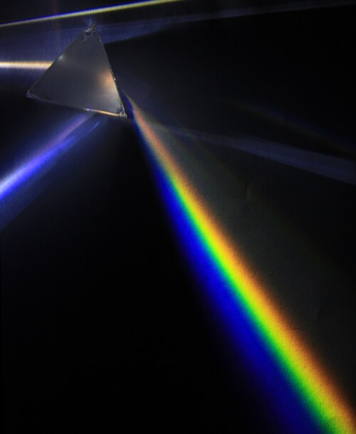

Optik, ışık hareketlerini, özelliklerini, ışığın diğer maddelerle etkileşimini inceleyen; fiziğin ışığın ölçümünü ve sınıflandırması ile uğraşan bir alt dalı.[1] Optik, genellikle gözle görülebilen ışık dalgalarının ve gözle görülemeyen morötesi ve kızılötesi ışık dalgalarının hareketini inceler. Çünkü ışık bir elektromanyetik dalgadır ve diğer elektromanyetik dalga türleri (X-ray, mikrodalga, radyo dalgaları gibi) ile benzer özellikler gösterir.[1]
Çoğu optik olay ışığın klasik elektromanyetizma tanımı ile açıklanabilmektedir. Işığın elektromanyetik tanımlarını tam anlamıyla pratikte kullanmak zordur. Pratik (uygulanabilir) optikte genelde basitleştirilmiş modeller kullanılır. Bu modellerin en yaygını olan geometrik optik; ışığı bir demet olarak ele alır ve ışığı yüzeylerden yansırken, geçerken bükülen bir çizgi varsayar. Fiziksel optik ise ışığın daha kapsamlı bir modelidir. Geometrik optikle açıklanamayan dalga, kırınım, girişim olaylarını barındırır. Tarihsel olarak ışığın demet temelli modeli dalga modelinden önce geliştirilmiştir. 19. yüzyılda elektromanyetik teorideki gelişim ışık dalgalarının aslında elektromanyetik dalga olduğunu göstermiştir.